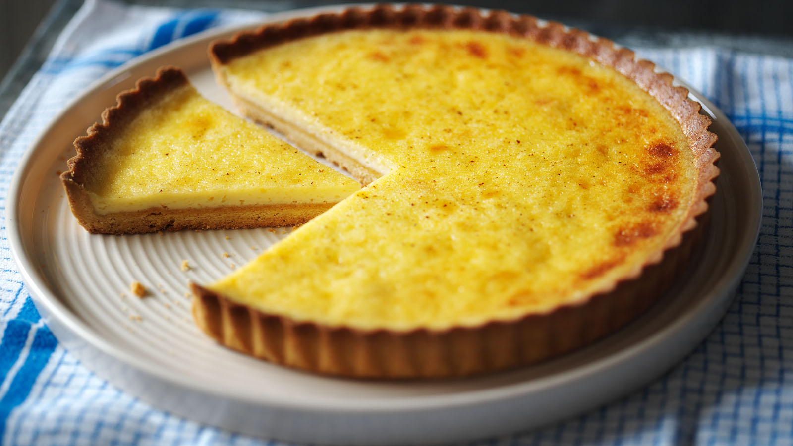

Custard tarts

Description
A classic English dessert perfect for picnics, tea parties, or lite snacking.
Ingredients
- 1 packet of crushed biscuits
- 3 table spoons of butter
- 1 cup double cream
- 125 ml milk
- 1 tbsp vanilla essence
- 4 egg yolks
- 1/4 cup caster sugar
Equipment
- Fridge
- Oven
- Muffin pans
- Saucepan
- Bowl
- Strainer
- Timer
Steps
- For the crust, take your crushed cookies
and mix it with your butter/margarine using your hands.
- Form a dough and put in the fridge for 30 minutes.
- Preheat the oven to 180ºC.
- Grease a muffin pan and press the cookie mixture into teach cup.
- Bake the crust for 10 minutes and then take the tray out of the oven,
reducing the temperature to 140 ºC.
- In a small saucepan, boil the milk, cream, and vanilla.
- In a separate bowl, beat the egg yolks and sugar together,
pouring over the hot milk mixture as you go.
- Pour the mixture through
a strainer before filling up each muffin cup.
- Bake your tarts for another
15-20 minutes, sprinkling with cinnamon once done.